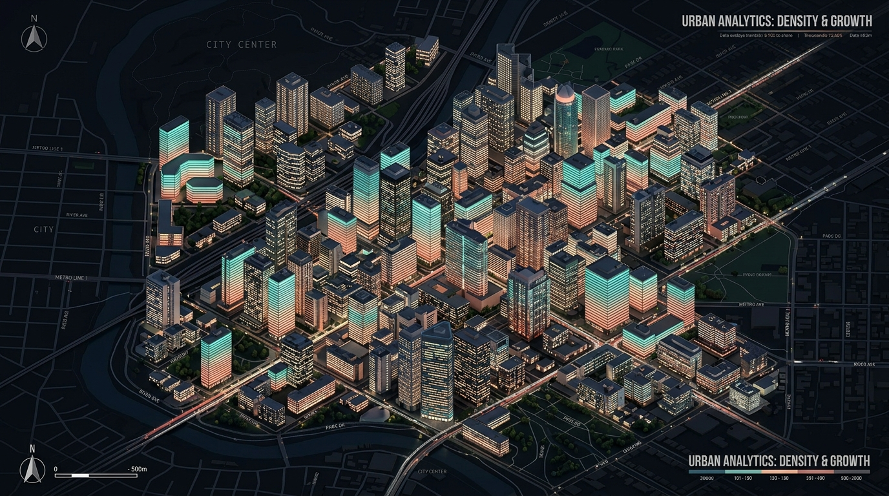
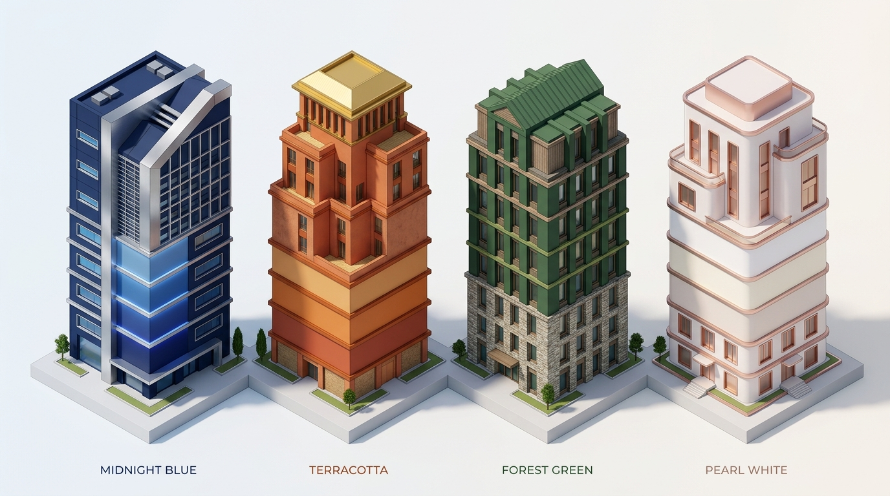
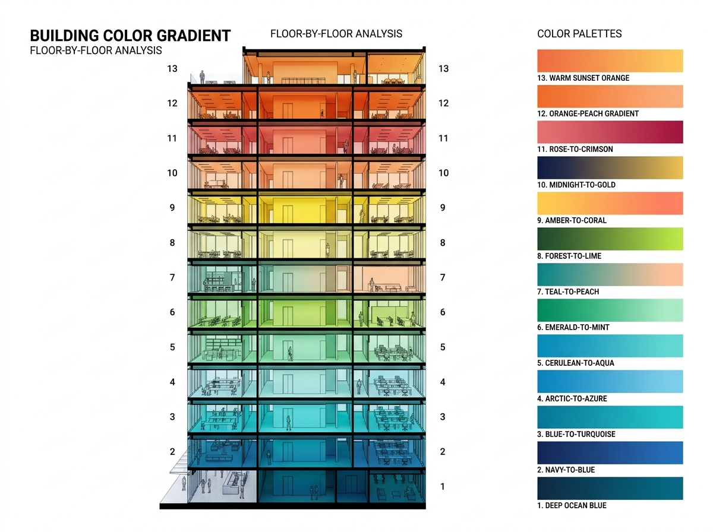
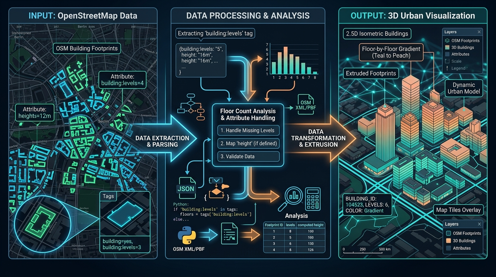

Turn any polygon layer or bounded OSM building footprints into stunning 2.5D maps — three renderers, 10 curated material themes, 23 per-floor palettes, and full QML import/export. No pip dependencies.
A single focused tool that does one thing exceptionally well: transforming flat building polygons into rich, layered 2.5D visualizations.
Asynchronously download bounded OSM building footprints directly for the current map view. Automatic metric CRS, local cache, mirror fallback, and building:levels floor-count extraction.
Geometry Generator with full facade/roof/shadow control, Per-Floor Color Bands with 23 palettes and a live swatch preview, and Native QGIS 2.5D using layer-scoped expression variables.
Curated themes adapted from the proven 02CartoLab 2.5D style collection. Midnight Blue, Terracotta, Forest Green, Pearl White, and six more — each ships its own matching floor gradient.
Control sun azimuth from 0° to 359° with six named shortcuts. Dynamic compass labels, configurable shading depth and shadow opacity for dramatic lighting effects.
OSM building:levels drives floor counts. Explicit height tags estimate floors automatically. Missing values fall back to a visible, user-configurable 3-floor default.
Export any applied renderer as a QML style file for reuse. Import community or previous QML styles. Non-destructive restore returns the original renderer at any time.
Slider edits trigger debounced preview refresh — no stuttering on every step. Adaptive delay for large layers automatically guards performance.
apply_25d_style runs the full renderer stack without the dock — ideal for batch workflows, QGIS Model Builder, and CI pipelines.
Filters non-polygon layers, detects height fields case-insensitively, warns on geographic CRS, and reports feature count and height source in the dock status bar.
Pick the approach that best matches your workflow — from expressive geometry generation to production-grade native QGIS rendering.
Builds facades, roofs, optional drop shadows, and floor division lines entirely through QGIS geometry expressions. Feature draw ordering ensures taller buildings paint above shorter neighbors.
A rule-based renderer that assigns a distinct color to each floor level. Live ten-floor swatch preview, 23 curated palettes, automatic or explicit floor limit, and the default renderer for OSM downloads.
Delegates to QGIS's built-in Qgs25DRenderer via layer-scoped expression variables. Integrates with QGIS 3D views and respects global rendering settings.
Every theme ships a matched set of facade color, roof accent, shading depth, shadow opacity, projection angle — and its own per-floor gradient derived from that theme’s own palette.

10 theme-derived gradients plus 13 standalone curated palettes. A live ten-floor swatch preview lets you compare options before committing.

The compact right-side dock guides you through every step. Each stage is clearly separated — OSM, Form, Light, Floors, Themes.
Pick any polygon layer from your project, or click “Download Buildings” to fetch OSM footprints for the current map view. building:levels and height tags are extracted automatically.
Geometry Generator for full control, Per-Floor Color Bands for floor-level gradients, or Native QGIS 2.5D for integration with QGIS’s own 3D rendering pipeline.
Set the projection angle (0–359°, six shortcuts), facade and roof colors, outline width, shading depth, shadow opacity, and story height. Debounced live preview updates instantly.
Select one of 10 material themes — the dock updates all controls and automatically switches the Floor Palette to that theme’s matching gradient. Or pick any of the 23 standalone palettes.
Click Apply to commit the renderer. Export a QML style file for reuse. Restore returns the original renderer non-destructively at any time. Settings persist across sessions.

Use qgis_25d_styling:apply_25d_style in QGIS Model Builder, Python scripts, or CI/CD pipelines — no dock required.
Release verification runs on both QGIS LTR and the current stable release. No external dependencies means zero install friction.
Open QGIS → Plugins → Manage and Install Plugins → Search for the plugin name → Install.
Download the latest release ZIP from GitHub → Plugins → Manage and Install Plugins → Install from ZIP → select the file.
Clone the repository to your QGIS plugin path and set QGIS_PLUGINPATH to the parent directory. Restart QGIS.